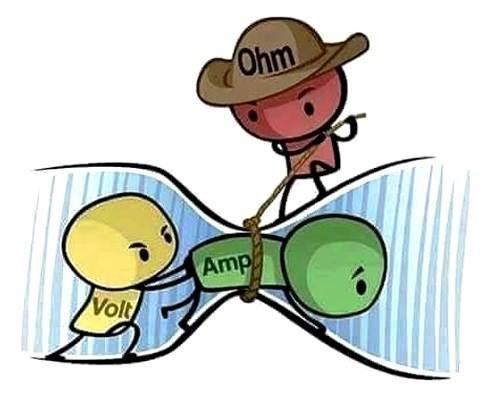

Magnitudes
Voltaje o tensión: Es la presión que ejerce una fuente de suministro de energía eléctrica o fuerza electromotriz (FEM) sobre las cargas eléctricas o electrones en un circuito eléctrico cerrado, para que se establezca el flujo de corriente eléctrica. Su unidad de medida es el voltio (V).
Intensidad o corriente: Es la cantidad de electricidad o carga eléctrica que circula por un circuito en una unidad de tiempo. Su unidad de medida es el amperio (A).
Potencia: Es la cantidad de energía que el transformador puede entregarle a la carga. Su unidad de medida es el vatio (W).
